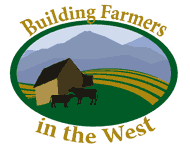

What new knowledge will farmers gain?
The "Building Farmers in the West" program provides educational support and access to agricultural resources for producers with varying levels of experience in agriculture. This program is directed to producers who want to learn how to successfully manage and grow a direct marketing enterprise of high-value crops. A primary goal of the program is to help these producers understand and manage the risks inherent in businesses that are selling directly to consumers through new marketing channels (such as farmers' markets, produce stands, community supported agriculture subscriptions, and other direct marketing avenues).
Course Summary
An eight-week short course is the primary educational component of the program, which includes
- Classroom sessions involving small group work on strategic business plan development, and panel discussions with local farmers
- Print materials, such as planning worksheets andhandouts detailing how the presenters manage their own market farm business
- Online planning and spreadsheet applications targeted at smaller-scale, diversified market farming operations
- Additional in-depth printed materials made available electronically for wider dissemination on University Extension websites
In addition to an eight-week course, the program can also deliver information through other channels, such as:
- Longer-term mentor contacts with individual producers designed to provide specific, hands-on technical assistance
- individual producer contacts with campus and county-based project personnel for strategic planning, production, or marketing assistance
Educational materials are built on successful curriculum pieces that have been peer reviewed.
Short course details are described below.
Course Details
Three Core Topic Areas
Strategic Business Planning Curriculum
By the end of this core section, participants will be acquainted with the major elements needed in a business plan:
- Vision and mission statements
- Defining and refining goals and objectives to achieve the mission
- Strategic assessment of the market and current enterprise
Course curriculum can be adapted in each program to complement the participants' needs and focus that the instructional speaker wants to emphasize.
Strategic Business Planning Curriculum
Planning for Market
Unlike more traditional agricultural marketing courses, this curriculum gives specific attention to elements that important for small-scale, highly differentiated products, including:
- Targeting markets and positioning yourself in the market
- Pricing Strategies and how they may vary by customer or marketing channel
- Effective promotion and merchandising for direct markets, using cost effective tools
This course curriculum can be adapted in each program to complement the participants' needs and focus that the instructional speaker wants to emphasize.
Marketing Curriculum
Recordkeeping & Financial Analysis for Start-ups and Smaller Scale Operations
The financing that beginning farmers need requires particularly good cash flow planning to assure that adequate resources are available throughout the production season. This class will emphasize the need for cost-of-production and cash flow budget planning and effective use of capital including:
- Principles of cash-basis recordkeeping for farms, including unique challenges for farms with a highly diverse set of enterprises
- Creating an individualized, useful chart of accounts
- Monitoring the implementation of your business plan
- End-of-year conversion of cash-basis records to accrual accounting information
- Completion and analysis of financial statements (equity, cash flow and income)
- Acquiring capital for a beginning farming operation
These topics can be adapted in each program to complement the participants' needs and the focus that the instructional speaker wants to emphasize.
Records & Financial Analysis Curriculum
Optional Topics
Food Safety (see marketing curriculum)
- What are the regulations producers should be aware of in different markets?
- How will food safety concerns influence your production, handling and marketing choices?
- What resources are available locally to help you comply with food safety regulations?
Income Taxes (see Records & Financial Analysis curriculum)
- How to use a simple, cash-basis recordkeeping system to easily complete your Farm Income Tax Return (IRS Schedule F)
- How to use the "Farmers Tax Guide" (IRS Publication 225) to clearly understand all IRS requirements related to operating your farm business
- How to effectively time the purchase and depreciation of your capital assets
Land Acquisition and Farming on Public Land
- How intermediate producers got into farming, overview of your farm
- Innovative approaches to finding land, water and/or capital
- Marketing thru farmers market, and labor management
- Growing production area through leases, partnerships
Agritourism
- What are the opportunities to enhance revenues through visitors (not just sales)
- Marketing strategies for agritourism enterprises
- Regulatory and risk management with visitors

A regional partnership to build community and capacity among a new generation of direct market farmers and local food systems.
Funded by the USDA Beginning Farmers and Ranchers Development Program (grant award number 2009-49400-05877).